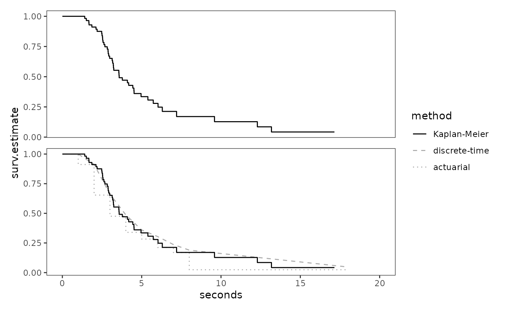
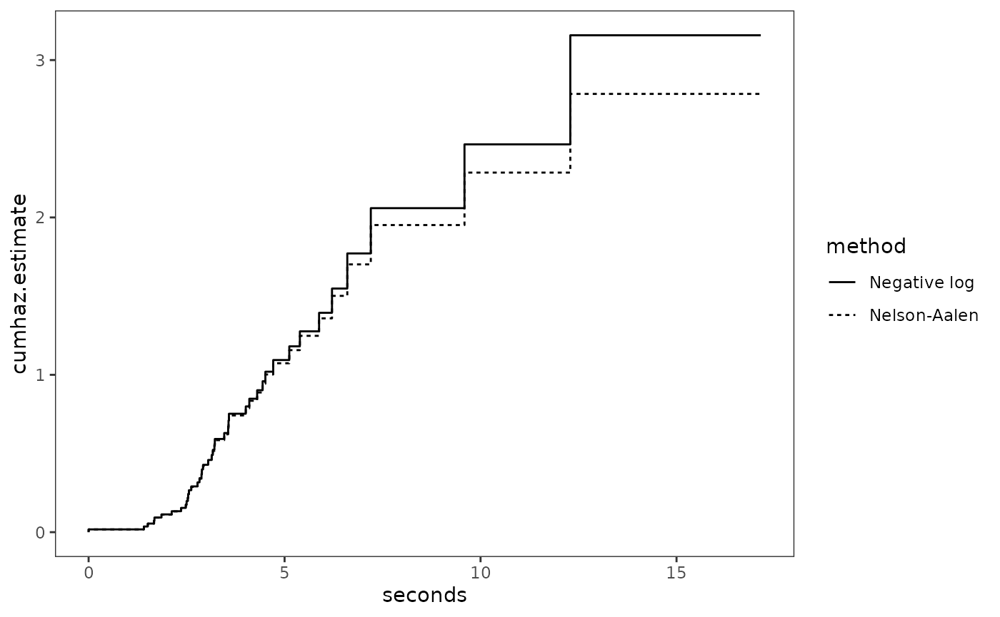
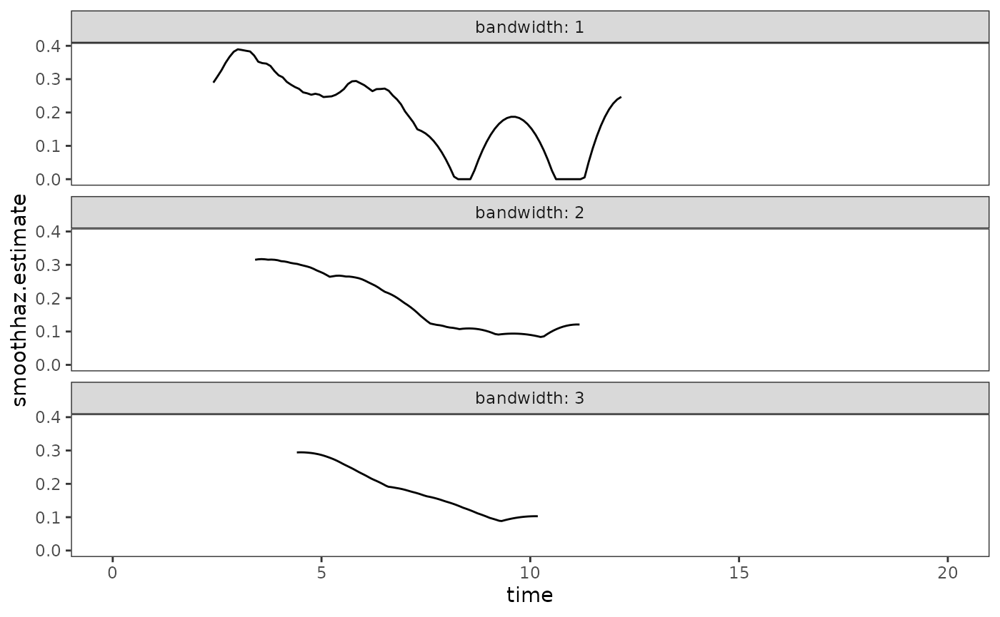
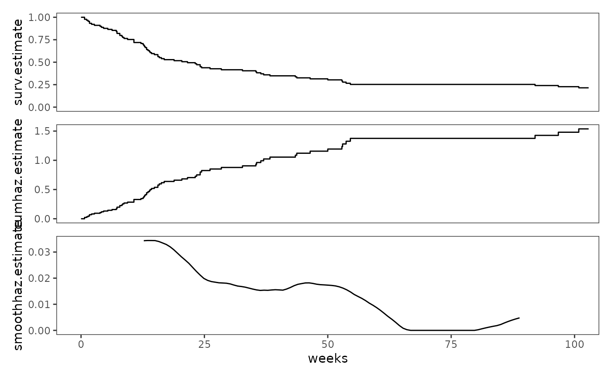
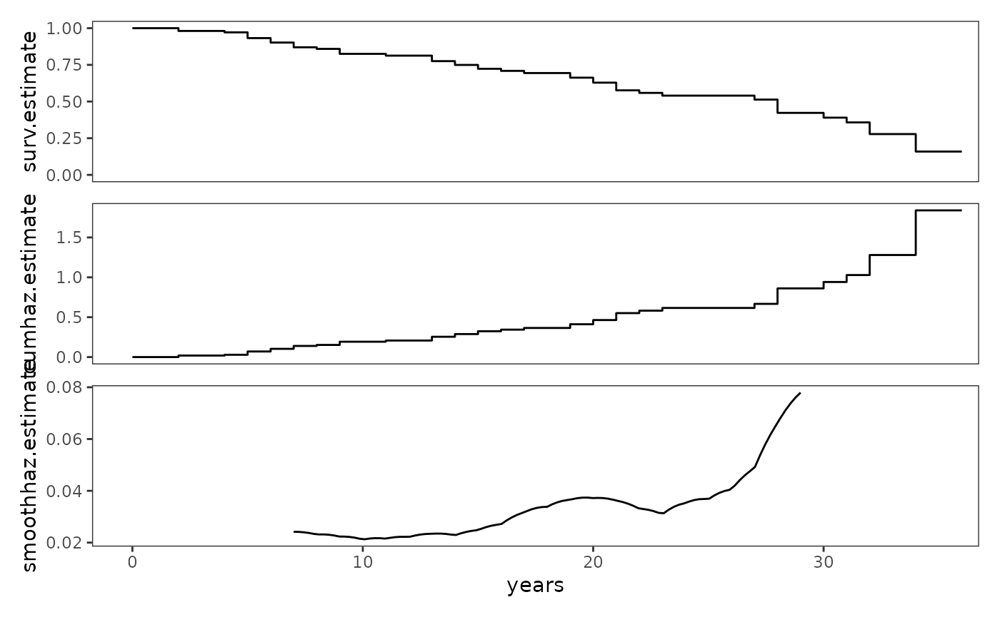
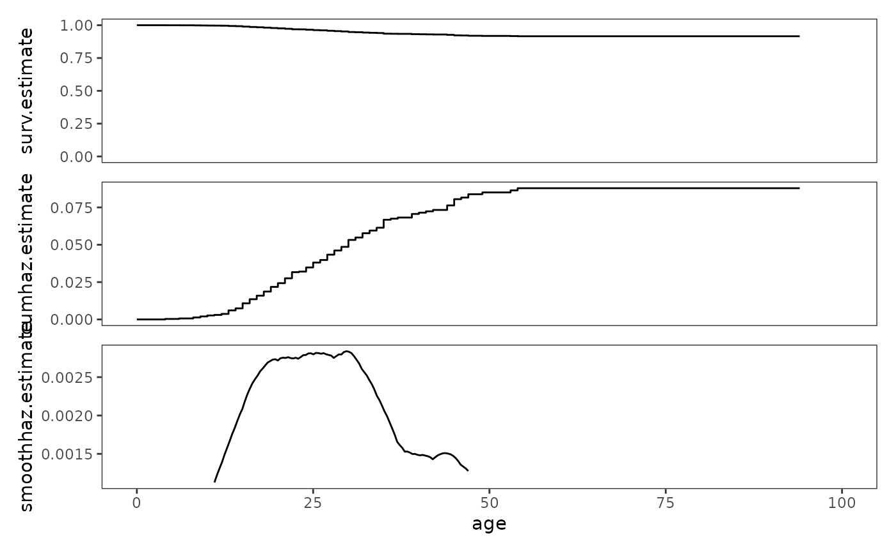
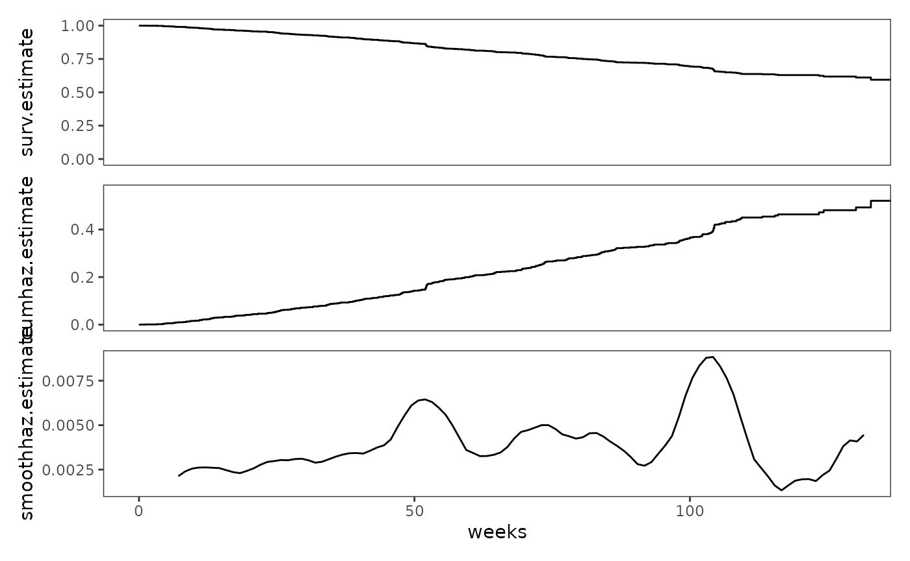

Chapter 13: Describing continuous-time event occurrence data
Source:vignettes/articles/chapter-13.Rmd
chapter-13.Rmd
library(alda)
library(dplyr)
library(tidyr)
library(purrr)
library(stringr)
library(ggplot2)
library(patchwork)
library(survival)
library(muhaz)
library(broom)
library(gt)13.1 A framework for characterizing the distribution of continuous-time event data
In Section 13.1 Singer and Willett (2003) discuss the salient features of continuous-time event data using a subset of data from Diekmann and colleagues (1996), who measured time to horn honking in a sample of 57 motorists who were purposefully blocked at a green light by a Volkswagen Jetta at a busy intersection near the centre of Munich, West Germany on two busy afternoons (Sunday and Monday) in 1998. Motorists were followed until they honked their horns or took an alternative action (beaming or changing lanes).
For this example we use the honking data set, a
person-level data frame with 57 rows and 3 columns:
-
id: Participant ID. -
seconds: Number of seconds to horn honking or an alternative action. -
censor: Censoring status.
honking
#> # A tibble: 57 × 3
#> id seconds censor
#> <fct> <dbl> <dbl>
#> 1 1 2.88 0
#> 2 2 4.63 1
#> 3 3 2.36 1
#> 4 4 2.68 0
#> 5 5 2.5 0
#> 6 6 4.3 1
#> 7 7 1.86 0
#> 8 8 4.01 1
#> 9 9 1.41 0
#> 10 10 9.59 0
#> # ℹ 47 more rowsThe defining feature of continuous time is that it is infinitely divisible—there exist an infinite number of possible instants when the target event can occur, which can be measured with ever-increasing precision by using finer metrics for clocking time. As Singer and Willett (2003) discuss, because continuous time is infinitely divisible, the (theoretical) distribution of event times has two salient features:
- The probability of observing any particular event time is infinitesimally small.
- The probability that two or more individuals will share the same event time is infinitesimally small.
Although we do not expect to observe these properties exactly in real
data due to measurement limitations, such as rounding, we can observe
that both of these properties are almost manifested in the event times
of the honking data, which has only one tie at 1.41
seconds.
# Similar to Table 13.1:
honking |>
arrange(seconds) |>
mutate(
seconds = ifelse(censor == 0, seconds, paste0(seconds, "*")),
.keep = "none"
) |>
pull(seconds)
#> [1] "1.41" "1.41*" "1.51" "1.67" "1.68" "1.86" "2.12" "2.19"
#> [9] "2.36*" "2.48" "2.5" "2.53" "2.54" "2.56" "2.62" "2.68"
#> [17] "2.76*" "2.78*" "2.83" "2.88" "2.89" "2.92" "2.98" "3.05*"
#> [25] "3.14" "3.17" "3.21" "3.22" "3.24" "3.46*" "3.56" "3.57"
#> [33] "3.58" "3.78" "4.01*" "4.1" "4.18" "4.3*" "4.44" "4.51"
#> [41] "4.52" "4.63*" "4.71*" "4.96" "5.12*" "5.39" "5.73" "5.88*"
#> [49] "6.03" "6.21*" "6.3" "6.6*" "7.2" "9.59" "12.29" "13.18"
#> [57] "17.15*"These features are a significant departure from the distributional features of discrete event times, where the probability of event occurrence in at least some periods is non-zero and ties are pervasive. Because of this departure, we must introduce new continuous time definitions of the survivor and hazard functions:
-
The continuous-time survival function is the cumulative probability that the event time, , of the th individual will exceed , the infinite number of possible instants when the target event could occur:
which is essentially identical to the discrete-time survival function in definition and meaning, aside from the different metric for clocking time.
-
The continuous-time hazard function is an instantaneous rate assessing the conditional probability that the th individual will experience the target event in the next small interval of time, , given that they did not experience it in any prior interval, divided by the length of that interval:
which means that unlike discrete-time hazard probabilities, continuous-time hazard rates do not have an upper bound and can exceed values of 1.0.
13.2 Grouped methods for estimating continuous-time survivor and hazard functions
In Section 13.2 Singer and Willett (2003) discuss two strategies for estimating continuous-time survival and hazard functions from the grouped life table, which partitions continuous time into a manageable number of contiguous (possibly unequal width) intervals:
- The discrete-time method estimates continuous-time survival and hazard functions by applying the discrete-time principles of Section 10.2 to the grouped life table.
- The actuarial method (aka the life table method) estimates continuous-time survival and hazard functions based on data assumed to be available at each interval’s midpoint, using a similar strategy to the discrete-time method.
We begin by creating a grouped life table for the
honking data, which we divide into eight contiguous
intervals: seven 1-second intervals, and one 10-second interval.
honking_lifetable <- honking |>
group_by(time_interval = cut(seconds, breaks = c(1:8, 18), right = FALSE)) |>
# All grouping needs to be dropped after summarizing in order to calculate the
# number at risk correctly in the next step.
summarise(
n = n(),
n.event = sum(censor == 0),
n.censor = sum(censor == 1),
.groups = "drop"
) |>
mutate(
n.risk = sum(n) - lag(cumsum(n), default = 0),
prob.estimate = n.event / n.risk
) |>
select(time_interval, n.risk, n.event:prob.estimate)
honking_lifetable
#> # A tibble: 8 × 5
#> time_interval n.risk n.event n.censor prob.estimate
#> <fct> <int> <int> <int> <dbl>
#> 1 [1,2) 57 5 1 0.0877
#> 2 [2,3) 51 14 3 0.275
#> 3 [3,4) 34 9 2 0.265
#> 4 [4,5) 23 6 4 0.261
#> 5 [5,6) 13 2 2 0.154
#> 6 [6,7) 9 2 2 0.222
#> 7 [7,8) 5 1 0 0.2
#> 8 [8,18) 4 3 1 0.75Then we can estimate the continuous-time survival and hazard functions “by hand” using the discrete-time and actuarial methods.
honking_lifetable <- honking_lifetable |>
mutate(
# Temporary variables
time_start = as.numeric(str_extract(time_interval, "[[:digit:]]+(?=,)")),
time_end = as.numeric(str_extract(time_interval, "(?<=,)[[:digit:]]+")),
time_width = time_end - time_start,
prob.estimate.actuarial = n.event / (n.risk - (n.censor / 2)),
# Discrete-time method estimates
surv.discrete = cumprod(1 - prob.estimate),
haz.discrete = prob.estimate / time_width,
# Actuarial method estimates
surv.actuarial = cumprod(1 - prob.estimate.actuarial),
haz.actuarial = (
n.event / (n.risk - (n.censor / 2) - (n.event / 2)) / time_width
)
) |>
select(-c(time_start:prob.estimate.actuarial))
# Table 13.2, page 477:
honking_lifetable |>
gt() |>
fmt_number(columns = prob.estimate:haz.actuarial, decimals = 4)| time_interval | n.risk | n.event | n.censor | prob.estimate | surv.discrete | haz.discrete | surv.actuarial | haz.actuarial |
|---|---|---|---|---|---|---|---|---|
| [1,2) | 57 | 5 | 1 | 0.0877 | 0.9123 | 0.0877 | 0.9115 | 0.0926 |
| [2,3) | 51 | 14 | 3 | 0.2745 | 0.6619 | 0.2745 | 0.6537 | 0.3294 |
| [3,4) | 34 | 9 | 2 | 0.2647 | 0.4867 | 0.2647 | 0.4754 | 0.3158 |
| [4,5) | 23 | 6 | 4 | 0.2609 | 0.3597 | 0.2609 | 0.3396 | 0.3333 |
| [5,6) | 13 | 2 | 2 | 0.1538 | 0.3044 | 0.1538 | 0.2830 | 0.1818 |
| [6,7) | 9 | 2 | 2 | 0.2222 | 0.2367 | 0.2222 | 0.2122 | 0.2857 |
| [7,8) | 5 | 1 | 0 | 0.2000 | 0.1894 | 0.2000 | 0.1698 | 0.2222 |
| [8,18) | 4 | 3 | 1 | 0.7500 | 0.0473 | 0.0750 | 0.0243 | 0.1500 |
Finally we can plot the estimates of both methods. Following Singer and Willett (2003), we plot the actuarial estimates as a step function associating each survival probability and hazard rate with its entire time interval.
# Baseline plot
honking_plot <- honking_lifetable |>
mutate(
seconds = as.numeric(str_extract(time_interval, "(?<=,)[[:digit:]]+"))
) |>
add_row(seconds = 0:1, surv.discrete = 1, surv.actuarial = 1) |>
ggplot(aes(x = seconds))
# Survival functions
honking_surv.discrete <- honking_plot + geom_line(aes(y = surv.discrete))
honking_surv.actuarial <- honking_plot +
geom_step(aes(y = surv.actuarial), direction = "vh")
# Hazard functions
honking_haz.discrete <- honking_plot +
geom_line(aes(y = haz.discrete)) +
coord_cartesian(ylim = c(0, .35))
honking_haz.actuarial <- honking_plot +
geom_step(aes(y = haz.actuarial), direction = "vh") +
coord_cartesian(ylim = c(0, .35))
# Figure 13.1, page 479:
honking_surv.discrete + honking_surv.actuarial +
honking_haz.discrete + honking_haz.actuarial +
plot_layout(nrow = 2, axes = "collect_x")
13.3 The Kaplan-Meier method of estimating the continuous-time survivor function
In Section 13.3 Singer and Willett (2003) introduce the Kaplan-Meier method (aka the product-limit method) of estimating the continuous-time survival function, which is a simple extension of the discrete-time method that constructs time intervals using the raw event times such that each interval contains just one observed event time.
We can fit a survival function with the the Kaplan-Meier method using
the survfit() function from the survival
package (which we briefly discussed in Section 10.1). The model formula
for the survfit() function takes the form
response ~ terms, where the response must be a “survival
object” created by the Surv() function. For right-censored
data, the survival object can be created by supplying two unnamed
arguments to the Surv() function corresponding to
time and event variables, in that order. Note
that we can recode a censor variable into an
event variable by reversing its values. For 0-1 coded data,
we can write the event status as event = censor - 1.
honking_survfit <- survfit(Surv(seconds, 1 - censor) ~ 1, data = honking)
honking_survfit
#> Call: survfit(formula = Surv(seconds, 1 - censor) ~ 1, data = honking)
#>
#> n events median 0.95LCL 0.95UCL
#> [1,] 57 42 3.58 3.17 4.96We can view the grouped life table from the survfit
object using either the summary() function, or the
tidy() function from the broom
package.
summary(honking_survfit)
#> Call: survfit(formula = Surv(seconds, 1 - censor) ~ 1, data = honking)
#>
#> time n.risk n.event survival std.err lower 95% CI upper 95% CI
#> 1.41 57 1 0.9825 0.0174 0.94896 1.000
#> 1.51 55 1 0.9646 0.0246 0.91758 1.000
#> 1.67 54 1 0.9467 0.0299 0.88985 1.000
#> 1.68 53 1 0.9289 0.0343 0.86405 0.999
#> 1.86 52 1 0.9110 0.0380 0.83950 0.989
#> 2.12 51 1 0.8931 0.0412 0.81587 0.978
#> 2.19 50 1 0.8753 0.0441 0.79296 0.966
#> 2.48 48 1 0.8570 0.0468 0.77004 0.954
#> 2.50 47 1 0.8388 0.0492 0.74765 0.941
#> 2.53 46 1 0.8206 0.0514 0.72572 0.928
#> 2.54 45 1 0.8023 0.0534 0.70418 0.914
#> 2.56 44 1 0.7841 0.0552 0.68299 0.900
#> 2.62 43 1 0.7659 0.0569 0.66212 0.886
#> 2.68 42 1 0.7476 0.0584 0.64154 0.871
#> 2.83 39 1 0.7285 0.0599 0.61996 0.856
#> 2.88 38 1 0.7093 0.0614 0.59868 0.840
#> 2.89 37 1 0.6901 0.0626 0.57769 0.824
#> 2.92 36 1 0.6710 0.0637 0.55695 0.808
#> 2.98 35 1 0.6518 0.0647 0.53648 0.792
#> 3.14 33 1 0.6320 0.0657 0.51549 0.775
#> 3.17 32 1 0.6123 0.0666 0.49477 0.758
#> 3.21 31 1 0.5925 0.0673 0.47429 0.740
#> 3.22 30 1 0.5728 0.0679 0.45405 0.723
#> 3.24 29 1 0.5530 0.0684 0.43404 0.705
#> 3.56 27 1 0.5325 0.0688 0.41338 0.686
#> 3.57 26 1 0.5121 0.0692 0.39297 0.667
#> 3.58 25 1 0.4916 0.0694 0.37282 0.648
#> 3.78 24 1 0.4711 0.0694 0.35291 0.629
#> 4.10 22 1 0.4497 0.0695 0.33217 0.609
#> 4.18 21 1 0.4283 0.0694 0.31172 0.588
#> 4.44 19 1 0.4057 0.0693 0.29028 0.567
#> 4.51 18 1 0.3832 0.0690 0.26919 0.545
#> 4.52 17 1 0.3606 0.0686 0.24847 0.523
#> 4.96 14 1 0.3349 0.0683 0.22451 0.500
#> 5.39 12 1 0.3070 0.0681 0.19875 0.474
#> 5.73 11 1 0.2791 0.0674 0.17386 0.448
#> 6.03 9 1 0.2481 0.0666 0.14651 0.420
#> 6.30 7 1 0.2126 0.0659 0.11585 0.390
#> 7.20 5 1 0.1701 0.0650 0.08044 0.360
#> 9.59 4 1 0.1276 0.0611 0.04991 0.326
#> 12.29 3 1 0.0851 0.0535 0.02478 0.292
#> 13.18 2 1 0.0425 0.0403 0.00665 0.272Note that these two methods return different standard errors: The
summary() function returns the standard error for the
survival function; however, the tidy() function returns the
standard error for the cumulative hazard (see Section 13.4), so we
need to transform it to get the standard error for the survival
function.
tidy(honking_survfit)
#> # A tibble: 56 × 8
#> time n.risk n.event n.censor estimate std.error conf.high conf.low
#> <dbl> <dbl> <dbl> <dbl> <dbl> <dbl> <dbl> <dbl>
#> 1 1.41 57 1 1 0.982 0.0177 1 0.949
#> 2 1.51 55 1 0 0.965 0.0255 1 0.918
#> 3 1.67 54 1 0 0.947 0.0316 1 0.890
#> 4 1.68 53 1 0 0.929 0.0369 0.999 0.864
#> 5 1.86 52 1 0 0.911 0.0417 0.989 0.840
#> 6 2.12 51 1 0 0.893 0.0462 0.978 0.816
#> 7 2.19 50 1 0 0.875 0.0504 0.966 0.793
#> 8 2.36 49 0 1 0.875 0.0504 0.966 0.793
#> 9 2.48 48 1 0 0.857 0.0546 0.954 0.770
#> 10 2.5 47 1 0 0.839 0.0587 0.941 0.748
#> # ℹ 46 more rowsThey also return differing numbers of rows: By default, the
summary() function returns rows only for intervals where an
event occurred (this can be changed with the censored
argument); whereas the the tidy() function always returns
rows for both uncensored and censored intervals. However, because
survival estimates do not change during censored intervals, an easy way
to match the result of tidy() with summary()
is to group the data by estimate values, then summarize.
honking_lifetable_km <- honking_survfit |>
survfit0() |>
tidy() |>
group_by(pick(estimate:conf.low)) |>
summarise(
time_start = first(time),
n.risk = first(n.risk),
across(c(n.event, n.censor), sum),
.groups = "drop"
) |>
arrange(time_start) |>
mutate(
std.error = estimate * std.error,
interval = 1:n() - 1,
time_end = lead(time_start, default = Inf),
time_width = time_end - time_start,
prob.estimate = n.event / n.risk,
# Note that although there is no Kaplan-Meier-type hazard estimate, this
# statistic forms the basis of other descriptive methods discussed below.
# The values depicted here differ slightly from the text because Singer and
# Willett (2003) rounded the probability estimates before estimating the
# hazard.
haz.estimate = prob.estimate / time_width
) |>
select(
interval,
time_start,
time_end,
n.risk:n.censor,
prob.estimate,
surv.estimate = estimate,
std.error,
time_width,
haz.estimate
)
# Table 13.3, page 484:
honking_lifetable_km |>
gt() |>
fmt_number(
columns = c(prob.estimate, surv.estimate, std.error, haz.estimate),
decimals = 4
)| interval | time_start | time_end | n.risk | n.event | n.censor | prob.estimate | surv.estimate | std.error | time_width | haz.estimate |
|---|---|---|---|---|---|---|---|---|---|---|
| 0 | 0.00 | 1.41 | 57 | 0 | 0 | 0.0000 | 1.0000 | 0.0000 | 1.41 | 0.0000 |
| 1 | 1.41 | 1.51 | 57 | 1 | 1 | 0.0175 | 0.9825 | 0.0174 | 0.10 | 0.1754 |
| 2 | 1.51 | 1.67 | 55 | 1 | 0 | 0.0182 | 0.9646 | 0.0246 | 0.16 | 0.1136 |
| 3 | 1.67 | 1.68 | 54 | 1 | 0 | 0.0185 | 0.9467 | 0.0299 | 0.01 | 1.8519 |
| 4 | 1.68 | 1.86 | 53 | 1 | 0 | 0.0189 | 0.9289 | 0.0343 | 0.18 | 0.1048 |
| 5 | 1.86 | 2.12 | 52 | 1 | 0 | 0.0192 | 0.9110 | 0.0380 | 0.26 | 0.0740 |
| 6 | 2.12 | 2.19 | 51 | 1 | 0 | 0.0196 | 0.8931 | 0.0412 | 0.07 | 0.2801 |
| 7 | 2.19 | 2.48 | 50 | 1 | 1 | 0.0200 | 0.8753 | 0.0441 | 0.29 | 0.0690 |
| 8 | 2.48 | 2.50 | 48 | 1 | 0 | 0.0208 | 0.8570 | 0.0468 | 0.02 | 1.0417 |
| 9 | 2.50 | 2.53 | 47 | 1 | 0 | 0.0213 | 0.8388 | 0.0492 | 0.03 | 0.7092 |
| 10 | 2.53 | 2.54 | 46 | 1 | 0 | 0.0217 | 0.8206 | 0.0514 | 0.01 | 2.1739 |
| 11 | 2.54 | 2.56 | 45 | 1 | 0 | 0.0222 | 0.8023 | 0.0534 | 0.02 | 1.1111 |
| 12 | 2.56 | 2.62 | 44 | 1 | 0 | 0.0227 | 0.7841 | 0.0552 | 0.06 | 0.3788 |
| 13 | 2.62 | 2.68 | 43 | 1 | 0 | 0.0233 | 0.7659 | 0.0569 | 0.06 | 0.3876 |
| 14 | 2.68 | 2.83 | 42 | 1 | 2 | 0.0238 | 0.7476 | 0.0584 | 0.15 | 0.1587 |
| 15 | 2.83 | 2.88 | 39 | 1 | 0 | 0.0256 | 0.7285 | 0.0599 | 0.05 | 0.5128 |
| 16 | 2.88 | 2.89 | 38 | 1 | 0 | 0.0263 | 0.7093 | 0.0614 | 0.01 | 2.6316 |
| 17 | 2.89 | 2.92 | 37 | 1 | 0 | 0.0270 | 0.6901 | 0.0626 | 0.03 | 0.9009 |
| 18 | 2.92 | 2.98 | 36 | 1 | 0 | 0.0278 | 0.6710 | 0.0637 | 0.06 | 0.4630 |
| 19 | 2.98 | 3.14 | 35 | 1 | 1 | 0.0286 | 0.6518 | 0.0647 | 0.16 | 0.1786 |
| 20 | 3.14 | 3.17 | 33 | 1 | 0 | 0.0303 | 0.6320 | 0.0657 | 0.03 | 1.0101 |
| 21 | 3.17 | 3.21 | 32 | 1 | 0 | 0.0312 | 0.6123 | 0.0666 | 0.04 | 0.7812 |
| 22 | 3.21 | 3.22 | 31 | 1 | 0 | 0.0323 | 0.5925 | 0.0673 | 0.01 | 3.2258 |
| 23 | 3.22 | 3.24 | 30 | 1 | 0 | 0.0333 | 0.5728 | 0.0679 | 0.02 | 1.6667 |
| 24 | 3.24 | 3.56 | 29 | 1 | 1 | 0.0345 | 0.5530 | 0.0684 | 0.32 | 0.1078 |
| 25 | 3.56 | 3.57 | 27 | 1 | 0 | 0.0370 | 0.5325 | 0.0688 | 0.01 | 3.7037 |
| 26 | 3.57 | 3.58 | 26 | 1 | 0 | 0.0385 | 0.5121 | 0.0692 | 0.01 | 3.8462 |
| 27 | 3.58 | 3.78 | 25 | 1 | 0 | 0.0400 | 0.4916 | 0.0694 | 0.20 | 0.2000 |
| 28 | 3.78 | 4.10 | 24 | 1 | 1 | 0.0417 | 0.4711 | 0.0694 | 0.32 | 0.1302 |
| 29 | 4.10 | 4.18 | 22 | 1 | 0 | 0.0455 | 0.4497 | 0.0695 | 0.08 | 0.5682 |
| 30 | 4.18 | 4.44 | 21 | 1 | 1 | 0.0476 | 0.4283 | 0.0694 | 0.26 | 0.1832 |
| 31 | 4.44 | 4.51 | 19 | 1 | 0 | 0.0526 | 0.4057 | 0.0693 | 0.07 | 0.7519 |
| 32 | 4.51 | 4.52 | 18 | 1 | 0 | 0.0556 | 0.3832 | 0.0690 | 0.01 | 5.5556 |
| 33 | 4.52 | 4.96 | 17 | 1 | 2 | 0.0588 | 0.3606 | 0.0686 | 0.44 | 0.1337 |
| 34 | 4.96 | 5.39 | 14 | 1 | 1 | 0.0714 | 0.3349 | 0.0683 | 0.43 | 0.1661 |
| 35 | 5.39 | 5.73 | 12 | 1 | 0 | 0.0833 | 0.3070 | 0.0681 | 0.34 | 0.2451 |
| 36 | 5.73 | 6.03 | 11 | 1 | 1 | 0.0909 | 0.2791 | 0.0674 | 0.30 | 0.3030 |
| 37 | 6.03 | 6.30 | 9 | 1 | 1 | 0.1111 | 0.2481 | 0.0666 | 0.27 | 0.4115 |
| 38 | 6.30 | 7.20 | 7 | 1 | 1 | 0.1429 | 0.2126 | 0.0659 | 0.90 | 0.1587 |
| 39 | 7.20 | 9.59 | 5 | 1 | 0 | 0.2000 | 0.1701 | 0.0650 | 2.39 | 0.0837 |
| 40 | 9.59 | 12.29 | 4 | 1 | 0 | 0.2500 | 0.1276 | 0.0611 | 2.70 | 0.0926 |
| 41 | 12.29 | 13.18 | 3 | 1 | 0 | 0.3333 | 0.0851 | 0.0535 | 0.89 | 0.3745 |
| 42 | 13.18 | Inf | 2 | 1 | 1 | 0.5000 | 0.0425 | 0.0403 | Inf | 0.0000 |
Finally, we can plot the Kaplan-Meier estimates of the continuous
time survival function, and compare them with the discrete-time and
actuarial estimates. Note that for plotting, we prefer the grouped life
table with uncensored and censored intervals. This is because, if the
largest event time is censored (as it is here), it allows us to extend
the last interval of the step function out to that largest censored
value rather than going to infinity. Therefore, here we re-tidy the
honking_survfit object rather than using the
honking_lifetable_km grouped life table.
honking_surv.km <- honking_survfit |>
survfit0() |>
tidy() |>
rename(seconds = time, surv.estimate = estimate) |>
mutate(
method = factor(
"Kaplan-Meier", levels = c("Kaplan-Meier", "discrete-time", "actuarial")
)
) |>
ggplot(aes(x = seconds)) +
geom_step(
aes(y = surv.estimate, linetype = method), direction = "hv"
) +
guides(linetype = "none") +
coord_cartesian(xlim = c(0, 20))
honking_survs <- honking_surv.km +
geom_line(
aes(y = surv.discrete, linetype = "discrete-time"),
data = honking_plot$data,
alpha = .33
) +
geom_step(
aes(y = surv.actuarial, linetype = "actuarial"),
data = honking_plot$data,
direction = "vh",
alpha = .33
) +
scale_linetype_manual(values = 1:3) +
guides(linetype = guide_legend())
# Figure 13.2, page 485:
honking_surv.km + honking_survs +
plot_layout(ncol = 1, guides = "collect", axes = "collect")
13.4 The cumulative hazard function
In Section 13.4 Singer and Willett (2003) introduce the cumulative hazard function, which is the integral of the hazard function between the integration limits of time 0 and time (i.e., the “accumulation” of the hazard over time), given by:
There are two simple ways to estimate the cumulative hazard function:
-
The Nelson-Aalen method accumulates the estimated total amount of hazard during all instants in each interval, given by the product of the th Kaplan-Meier–type hazard estimate and its interval’s width:
-
The negative log survivor function method exploits a well-known mathematical relationship between the cumulative hazard and survivor functions, which is that the population cumulative hazard function is identical to the negative log of the population survivor function:
Here we will use both of these methods to plot cumulative hazard
functions from the honking_survfit object. Notice that the
the estimates are most similar during early event times, when the risk
set is large, diverging as the size of the risk set decreases.
honking_lifetable_km_2 <- honking_survfit |>
survfit0() |>
tidy() |>
mutate(
time_end = lead(time, default = Inf),
width = time_end - time,
prob.estimate = n.event / n.risk,
haz.estimate = prob.estimate / width,
cumhaz.nelson_aalen = survfit0(honking_survfit)[["cumhaz"]],
cumhaz.neglogsurv = -log(estimate)
) |>
rename(seconds = time, surv.estimate = estimate)
# Figure 13.4, page 493:
ggplot(honking_lifetable_km_2, aes(x = seconds)) +
geom_step(
aes(y = cumhaz.neglogsurv, linetype = "Negative log"),
direction = "vh"
) +
geom_step(
aes(y = cumhaz.nelson_aalen, linetype = "Nelson-Aalen"),
direction = "vh"
) +
labs(
y = "cumhaz.estimate",
linetype = "method"
)
When examining plots of the cumulative hazard function, Singer and Willett (2003) suggest studying how the rate of increase in the cumulative hazard function changes over time to deduce the shape of the underlying hazard function:
- A linear rate of increase suggests a constant hazard.
- An accelerating rate of increase suggests an increasing hazard.
- A decelerating rate of increase suggests a decreasing hazard.
- A changing rate of increase suggests that the hazard function has reached either a peak or a trough.
13.5 Kernel-smoothed estimates of the hazard function
In Section 13.5 Singer and Willett (2003) discuss how to visualize the underlying shape of the continuous-time hazard function using kernel-smoothed estimates, which estimate the “average” population value of hazard at many focal points in time by aggregating together all the point estimates in their temporal vicinity.
The muhaz() function from the muhaz
package can be used to estimate the kernel-smoothed hazard function from
right-censored data. For details on how the muhaz()
function works, consult the function documentation.
Here we will estimate and plot kernel-smooth hazard functions for the
honking data with bandwidths of 1, 2, and 3. Notice that as
the bandwidth increases, the shape of the function becomes smoother. As
Singer and Willett (2003) discuss, this suggests a need to explore a
range of bandwidths to strike a balance between smooth and precise
realizations of the underlying shape of the hazard function.
honking_smoothhaz <- map_df(
set_names(1:3),
\(.bandwidth) {
# muhaz() estimates the hazard function from right-censored data using
# kernel-based methods, using the vector of survival and event times.
kernel_smoothed_hazard <- muhaz(
honking$seconds,
1 - honking$censor,
# Narrow the temporal region the smoothed function describes, given the
# bandwidth and the minimum and maximum observed event times.
min.time = min(honking$seconds[honking$censor == 0]) + .bandwidth,
max.time = max(honking$seconds[honking$censor == 0]) - .bandwidth,
bw.grid = .bandwidth,
bw.method = "global",
b.cor = "none",
kern = "epanechnikov"
)
kernel_smoothed_hazard |>
tidy() |>
rename(smoothhaz.estimate = estimate)
},
.id = "bandwidth"
)
# Figure 13.5, page 496:
ggplot(honking_smoothhaz, aes(x = time, y = smoothhaz.estimate)) +
geom_line() +
scale_x_continuous(limits = c(0, 20)) +
facet_wrap(vars(bandwidth), ncol = 1, labeller = label_both)
13.6 Developing an intuition about continuous-time survivor, cumulative hazard, and kernel-smoothed hazard functions
In Section 13.6 Singer and Willett (2003) examine and describe the survival functions, cumulative hazard functions, and kernel-smoothed hazard functions from four studies that differ by their type of target event, metric for clocking time, and underlying profile of risk:
-
alcohol_relapse: A person-level data frame with 89 rows and 3 columns containing a subset of data from Cooney and colleagues (1991), who measured weeks to first “heavy drinking” day in a sample of 89 recently treated alcoholics. Individuals were followed for up to two years (around 104.286 weeks) or until they relapsed.alcohol_relapse #> # A tibble: 89 × 3 #> id weeks censor #> <fct> <dbl> <dbl> #> 1 1 0.714 0 #> 2 2 0.714 0 #> 3 3 1.14 0 #> 4 4 1.43 0 #> 5 5 1.71 0 #> 6 6 1.71 0 #> 7 7 2.14 0 #> 8 8 2.71 0 #> 9 9 3.86 0 #> 10 10 4.14 0 #> # ℹ 79 more rows -
judges: A person-level data frame with 109 rows and 7 columns containing data from Zorn and Van Winkle (2000) measuring how long all 107 justices appointed to the U.S. Supreme Court between 1789 and 1980 remained in their position.judges #> # A tibble: 109 × 7 #> id tenure dead retired left_appointment appointment_age appointment_year #> <fct> <dbl> <dbl> <dbl> <dbl> <dbl> <dbl> #> 1 1 1 0 1 1 50 1789 #> 2 2 6 0 1 1 57 1789 #> 3 3 6 0 1 1 44 1789 #> 4 4 9 1 0 1 47 1789 #> 5 5 21 1 0 1 57 1789 #> 6 6 9 1 0 1 38 1790 #> 7 7 1 0 1 1 59 1791 #> 8 8 13 1 0 1 47 1793 #> 9 9 4 0 1 1 51 1796 #> 10 10 15 1 0 1 55 1796 #> # ℹ 99 more rows -
first_depression_2: A person-level data frame with 2974 rows and 3 columns containing data from Sorenson, Rutter, and Aneshensel (1991), who measured age of first depressive episode in a sample of 2974 adults. Age of first depressive episode was measured by asking respondents whether and, if so, at what age they first experienced a depressive episode.first_depression_2 #> # A tibble: 2,974 × 3 #> id age censor #> <fct> <dbl> <dbl> #> 1 1 4 0 #> 2 2 6 0 #> 3 3 8 0 #> 4 4 8 0 #> 5 5 9 0 #> 6 6 9 0 #> 7 7 10 0 #> 8 8 10 0 #> 9 9 11 0 #> 10 10 12 0 #> # ℹ 2,964 more rows -
health_workers: A person-level data frame with 2074 rows and 3 columns containing a subset of data from Singer and colleagues (1998), who measured length of employment in a sample of 2074 health care workers hired by community and migrant health centres. Health care workers were followed for up to 33 months or until termination of employment.health_workers #> # A tibble: 2,074 × 3 #> id weeks censor #> <fct> <dbl> <dbl> #> 1 1 0.14 0 #> 2 2 0.42 1 #> 3 3 1 0 #> 4 4 1.28 1 #> 5 5 1.28 1 #> 6 6 1.71 1 #> 7 7 1.85 1 #> 8 8 1.85 1 #> 9 9 1.85 1 #> 10 10 2 1 #> # ℹ 2,064 more rows
First we will estimate survival and cumulative hazard functions for each of the studies.
alcohol_relapse_survfit <- survfit(
Surv(weeks, 1 - censor) ~ 1, data = alcohol_relapse
)
judges_survfit <- survfit(
Surv(tenure, dead) ~ 1, data = judges
)
first_depression_survfit <- survfit(
Surv(age, 1 - censor) ~ 1, data = first_depression_2
)
health_workers_survfit <- survfit(
Surv(weeks, 1 - censor) ~ 1, data = health_workers
)
study_survfit <- list(
alcohol_relapse = alcohol_relapse_survfit,
judges = judges_survfit,
first_depression = first_depression_survfit,
health_workers = health_workers_survfit
)
study_lifetables <- study_survfit |>
map(
\(.survfit) {
.survfit |>
survfit0() |>
tidy() |>
mutate(cumhaz.estimate = -log(estimate)) |>
select(time, surv.estimate = estimate, cumhaz.estimate)
}
)
study_lifetables
#> $alcohol_relapse
#> # A tibble: 65 × 3
#> time surv.estimate cumhaz.estimate
#> <dbl> <dbl> <dbl>
#> 1 0 1 0
#> 2 0.714 0.978 0.0227
#> 3 1.14 0.966 0.0343
#> 4 1.43 0.955 0.0460
#> 5 1.71 0.933 0.0698
#> 6 2.14 0.921 0.0819
#> 7 2.71 0.910 0.0942
#> 8 3.86 0.899 0.107
#> 9 4.14 0.888 0.119
#> 10 4.57 0.876 0.132
#> # ℹ 55 more rows
#>
#> $judges
#> # A tibble: 34 × 3
#> time surv.estimate cumhaz.estimate
#> <dbl> <dbl> <dbl>
#> 1 0 1 0
#> 2 1 1 0
#> 3 2 0.981 0.0190
#> 4 3 0.981 0.0190
#> 5 4 0.972 0.0288
#> 6 5 0.932 0.0700
#> 7 6 0.902 0.103
#> 8 7 0.870 0.140
#> 9 8 0.859 0.152
#> 10 9 0.825 0.192
#> # ℹ 24 more rows
#>
#> $first_depression
#> # A tibble: 85 × 3
#> time surv.estimate cumhaz.estimate
#> <dbl> <dbl> <dbl>
#> 1 0 1 0
#> 2 4 1.00 0.000336
#> 3 6 0.999 0.000673
#> 4 8 0.999 0.00135
#> 5 9 0.998 0.00202
#> 6 10 0.997 0.00269
#> 7 11 0.997 0.00303
#> 8 12 0.996 0.00371
#> 9 13 0.994 0.00607
#> 10 14 0.993 0.00742
#> # ℹ 75 more rows
#>
#> $health_workers
#> # A tibble: 649 × 3
#> time surv.estimate cumhaz.estimate
#> <dbl> <dbl> <dbl>
#> 1 0 1 0
#> 2 0.14 1.00 0.000482
#> 3 0.42 1.00 0.000482
#> 4 1 0.999 0.000965
#> 5 1.28 0.999 0.000965
#> 6 1.71 0.999 0.000965
#> 7 1.85 0.999 0.000965
#> 8 2 0.999 0.000965
#> 9 2.14 0.999 0.000965
#> 10 2.28 0.999 0.000965
#> # ℹ 639 more rowsSecond, we will estimate the kernel-smoothed hazard functions.
study_smoothhaz <- pmap(
list(
list(
alcohol_relapse = alcohol_relapse$weeks,
judges = judges$tenure,
first_depression = first_depression_2$age,
health_workers = health_workers$weeks
),
list(
1 - alcohol_relapse$censor,
judges$dead,
1 - first_depression_2$censor,
1 - health_workers$censor
),
list(12, 5, 7, 7)
),
\(survival_time, event, bandwidth) {
kernel_smoothed_hazard <- muhaz(
survival_time,
event,
min.time = min(survival_time[1 - event == 0]) + bandwidth,
max.time = max(survival_time[1 - event == 0]) - bandwidth,
bw.grid = bandwidth,
bw.method = "global",
b.cor = "none",
kern = "epanechnikov"
)
kernel_smoothed_hazard |>
tidy() |>
rename(smoothhaz.estimate = estimate)
}
)
study_smoothhaz
#> $alcohol_relapse
#> # A tibble: 101 × 2
#> time smoothhaz.estimate
#> <dbl> <dbl>
#> 1 12.7 0.0343
#> 2 13.5 0.0344
#> 3 14.2 0.0344
#> 4 15.0 0.0344
#> 5 15.8 0.0340
#> 6 16.5 0.0335
#> 7 17.3 0.0329
#> 8 18.0 0.0320
#> 9 18.8 0.0309
#> 10 19.6 0.0295
#> # ℹ 91 more rows
#>
#> $judges
#> # A tibble: 101 × 2
#> time smoothhaz.estimate
#> <dbl> <dbl>
#> 1 7 0.0242
#> 2 7.22 0.0241
#> 3 7.44 0.0240
#> 4 7.66 0.0237
#> 5 7.88 0.0234
#> 6 8.1 0.0232
#> 7 8.32 0.0232
#> 8 8.54 0.0230
#> 9 8.76 0.0228
#> 10 8.98 0.0223
#> # ℹ 91 more rows
#>
#> $first_depression
#> # A tibble: 101 × 2
#> time smoothhaz.estimate
#> <dbl> <dbl>
#> 1 11 0.00113
#> 2 11.4 0.00122
#> 3 11.7 0.00131
#> 4 12.1 0.00139
#> 5 12.4 0.00149
#> 6 12.8 0.00158
#> 7 13.2 0.00167
#> 8 13.5 0.00176
#> 9 13.9 0.00184
#> 10 14.2 0.00193
#> # ℹ 91 more rows
#>
#> $health_workers
#> # A tibble: 101 × 2
#> time smoothhaz.estimate
#> <dbl> <dbl>
#> 1 7.14 0.00213
#> 2 8.38 0.00240
#> 3 9.63 0.00255
#> 4 10.9 0.00262
#> 5 12.1 0.00262
#> 6 13.4 0.00261
#> 7 14.6 0.00258
#> 8 15.9 0.00247
#> 9 17.1 0.00236
#> 10 18.3 0.00230
#> # ℹ 91 more rowsThird, we will join the survival and cumulative hazard function data frames with the kernel-smoothed hazard function data frames.
study_functions <- map2(
study_lifetables, study_smoothhaz,
\(.x, .y) {
.x |>
full_join(.y) |>
arrange(time)
}
)
study_functions
#> $alcohol_relapse
#> # A tibble: 165 × 4
#> time surv.estimate cumhaz.estimate smoothhaz.estimate
#> <dbl> <dbl> <dbl> <dbl>
#> 1 0 1 0 NA
#> 2 0.714 0.978 0.0227 NA
#> 3 1.14 0.966 0.0343 NA
#> 4 1.43 0.955 0.0460 NA
#> 5 1.71 0.933 0.0698 NA
#> 6 2.14 0.921 0.0819 NA
#> 7 2.71 0.910 0.0942 NA
#> 8 3.86 0.899 0.107 NA
#> 9 4.14 0.888 0.119 NA
#> 10 4.57 0.876 0.132 NA
#> # ℹ 155 more rows
#>
#> $judges
#> # A tibble: 132 × 4
#> time surv.estimate cumhaz.estimate smoothhaz.estimate
#> <dbl> <dbl> <dbl> <dbl>
#> 1 0 1 0 NA
#> 2 1 1 0 NA
#> 3 2 0.981 0.0190 NA
#> 4 3 0.981 0.0190 NA
#> 5 4 0.972 0.0288 NA
#> 6 5 0.932 0.0700 NA
#> 7 6 0.902 0.103 NA
#> 8 7 0.870 0.140 0.0242
#> 9 7.22 NA NA 0.0241
#> 10 7.44 NA NA 0.0240
#> # ℹ 122 more rows
#>
#> $first_depression
#> # A tibble: 181 × 4
#> time surv.estimate cumhaz.estimate smoothhaz.estimate
#> <dbl> <dbl> <dbl> <dbl>
#> 1 0 1 0 NA
#> 2 4 1.00 0.000336 NA
#> 3 6 0.999 0.000673 NA
#> 4 8 0.999 0.00135 NA
#> 5 9 0.998 0.00202 NA
#> 6 10 0.997 0.00269 NA
#> 7 11 0.997 0.00303 0.00113
#> 8 11.4 NA NA 0.00122
#> 9 11.7 NA NA 0.00131
#> 10 12 0.996 0.00371 NA
#> # ℹ 171 more rows
#>
#> $health_workers
#> # A tibble: 749 × 4
#> time surv.estimate cumhaz.estimate smoothhaz.estimate
#> <dbl> <dbl> <dbl> <dbl>
#> 1 0 1 0 NA
#> 2 0.14 1.00 0.000482 NA
#> 3 0.42 1.00 0.000482 NA
#> 4 1 0.999 0.000965 NA
#> 5 1.28 0.999 0.000965 NA
#> 6 1.71 0.999 0.000965 NA
#> 7 1.85 0.999 0.000965 NA
#> 8 2 0.999 0.000965 NA
#> 9 2.14 0.999 0.000965 NA
#> 10 2.28 0.999 0.000965 NA
#> # ℹ 739 more rowsFinally, we can plot the functions for each of the studies.
study_plots <- pmap(
list(
study_functions,
list(c(0, 100), c(0, 35), c(0, 100), c(0, 130)),
list("weeks", "years", "age", "weeks")
),
\(.study, .xlim, .time) {
study_surv <- .study |>
select(time, surv.estimate) |>
na.omit() |>
ggplot(aes(x = time, y = surv.estimate)) +
geom_step() +
coord_cartesian(xlim = .xlim, ylim = c(0, 1)) +
labs(x = .time)
study_cumhaz <- .study |>
select(time, cumhaz.estimate) |>
na.omit() |>
ggplot(aes(x = time, y = cumhaz.estimate)) +
geom_step() +
coord_cartesian(xlim = .xlim) +
labs(x = .time)
study_smoothhaz <- .study |>
select(time, smoothhaz.estimate) |>
na.omit() |>
ggplot(aes(x = time, y = smoothhaz.estimate)) +
geom_line() +
coord_cartesian(xlim = .xlim) +
labs(x = .time)
study_surv / study_cumhaz / study_smoothhaz +
plot_layout(axes = "collect")
}
)First, the alcohol_relapse data.
# Figure 13.6, page 499:
study_plots$alcohol_relapse
Second, the judges data.
# Figure 13.6, page 499:
study_plots$judges
Third, the first_depression data.
# Figure 13.6, page 499:
study_plots$first_depression
Finally, the health_workers data.
# Figure 13.6, page 499:
study_plots$health_workers